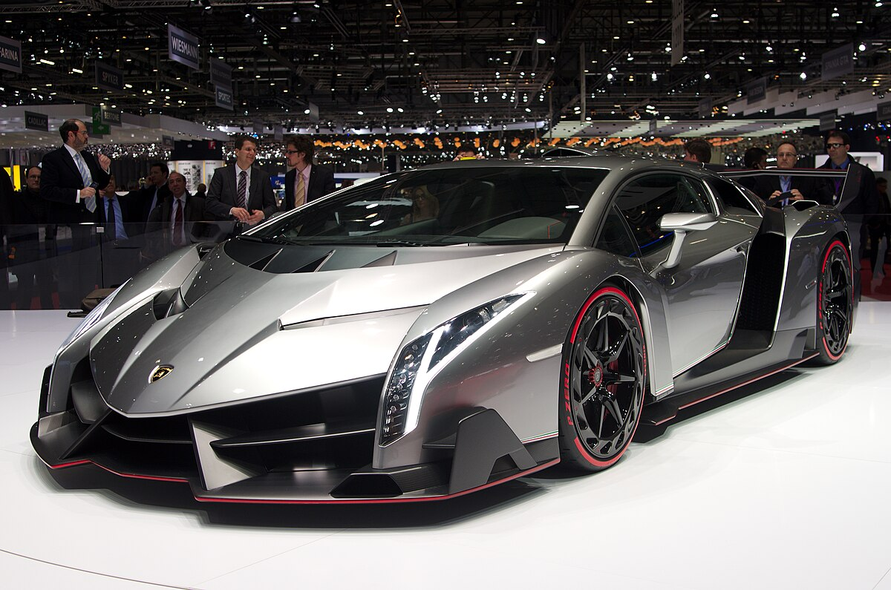
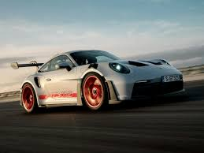
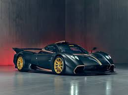
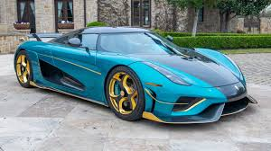

El Ferrari LaFerrari es un deportivo híbrido que combina un potente motor V12 de 800 CV con un motor eléctrico de 163 CV, ofreciendo una experiencia de conducción extrema con una potencia total de 963 CV, un diseño aerodinámico avanzado y un rendimiento sin precedentes en la historia de Ferrari.
LAMBORGHINI

El Lamborghini Veneno es un superdeportivo exclusivo y extremadamente aerodinámico, diseñado para ofrecer una experiencia de conducción cercana a la de un prototipo de carreras, con un motor V12 de 750 CV y un diseño que combina innovación tecnológica con un estilo icónico
PORSCHE

El Porsche GT3 RS es un superdeportivo sin límites, donde la tecnología y el diseño se fusionan para crear un vehículo de pura adrenalina, diseñado para dominar tanto la pista como la calle con su impresionante aerodinámica y potencia desbordante.
PAGANI

El Pagani Huayra R es un superdeportivo radical, diseñado exclusivamente para circuito, equipado con un motor V12 atmosférico de 850 CV y una aerodinámica extrema, que destaca por su rendimiento excepcional y su exclusividad limitada a solo 30 unidades.
KOENIGSEGG

El Koenigsegg Regera es un hipercoche híbrido revolucionario que combina un motor V8 biturbo con tres motores eléctricos, ofreciendo un rendimiento excepcional y una innovadora transmisión de engranaje único.